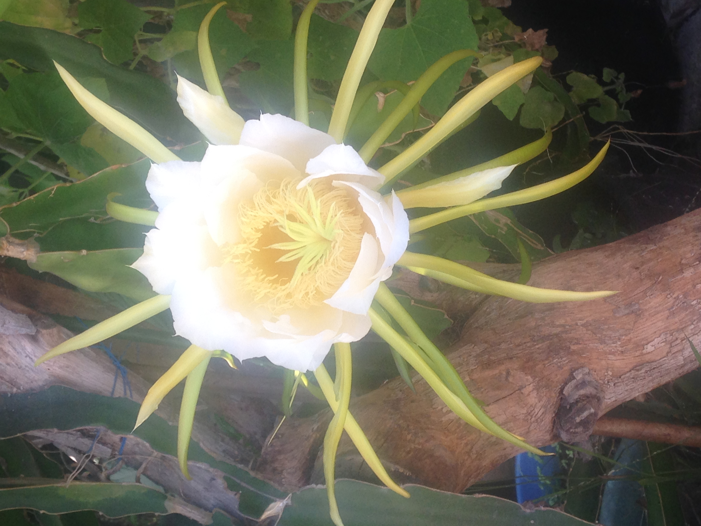
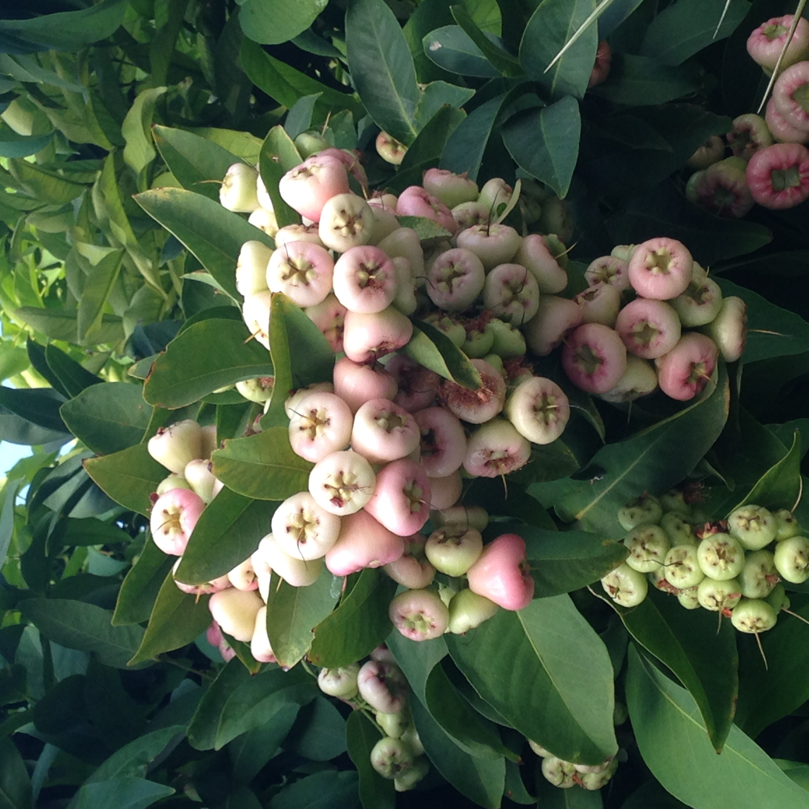
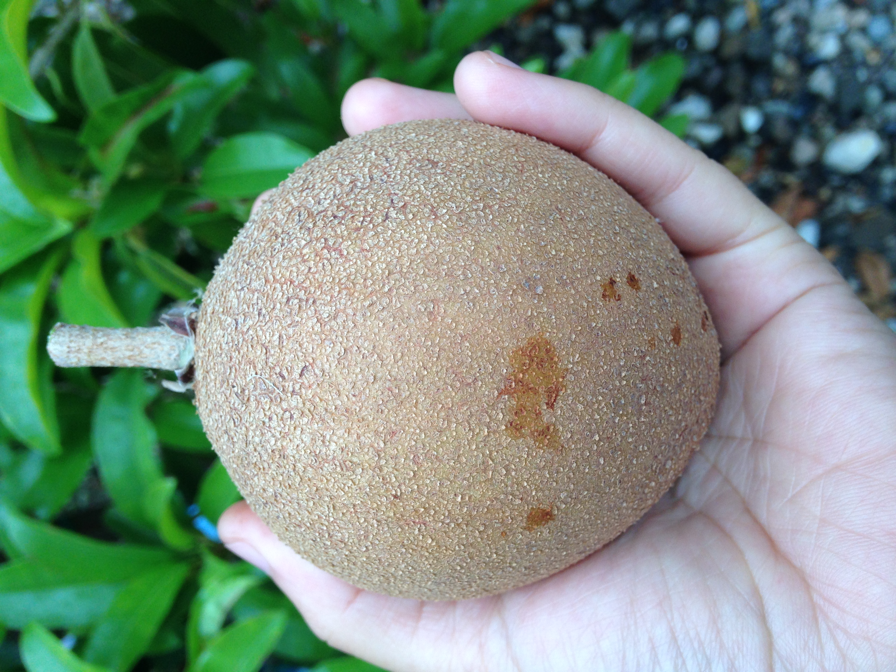

  
So, my name is Michelle Ha-Mi Duong. I am 20 years old, turning 21 on Feburuary 23. I've got three siblings, Natalie, Christine, and Teddy. They are 19, 17, and 4 respectively.Currently, I am in my third year of college, pursuing a B.S. in Computer Science and a minor in Mathamatics. I like shopping, eating, sleeping, and gardening. I LOVE fruit trees. In my garden I have apple, jujube, papaya, mango, wax jambu, apricot, pear, cherry, peach, tangerine, orange, sapodilla, chocolate sapote, avocado, banana, starfruit, sugar apple, kiwi, dragonfruit, atemoya, cherimoya, guava, grapefruit, blueberry, mamay sapote, jackfruit, suriname cherry, and star apple trees. The trees are of varying ages, from 6 months to 20 years. I have a part-time job coaching kids at a local swim team. My parents just got me a new car, a Toyota 2017 Camrey SE. It's pretty nice, especially the rear-view camera.